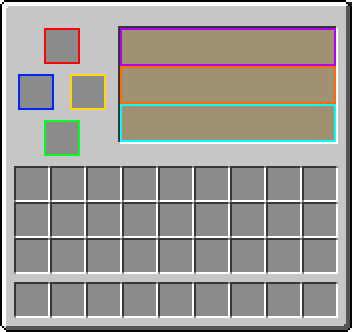

The purpose of this guide is to help explain some of the deeper mechanics of Chromamancy. Note that information in tooltips of items will not be displayed here.
NOTE: This landing page is under construction, and may not reflect the most up-to-date information.
Your first step to becoming a wizard is to create a Mana Stone.
After that, you need to craft an Altar of the same color as the spell you want to make.
Altar GUI:
|  |
Mana Stone Slot: Placing a Mana Stone here will recharge mana over time. The more bookshelves around the altar, the faster mana will regenerate. Mana Regeneration Status: This box will show the current rate of mana regeneration. Empty Tome Slot: Place empty spell tomes for crafting here. Secondary Ingredient Slot: Place secondary spell ingredients here. You can find the list of spells in-game by right clicking the tomes, or through the appropriate help pages for each class. Craft Spell Button: When a valid recipe is in the altar, you can press this button to begin the spell crafting process. This button will also specify what spell will be crafted before you press it. Progress Bar: This bar will show the progress of the spell that is currently being crafted. Result Slot: Finished spells will go here when crafting is complete. |
Many spells will gain experience when cast. When enough experience is gained, the spell will level up, and become more powerful.
You can freely toggle through the unlocked levels of a spell by sneaking and right-clicking the tome.
XP Table: (note that most spells only go to Level 5)
| Current Spell Level | XP for next Level |
|---|---|
| 1 | 100 |
| 2 | 300 |
| 3 | 500 |
| 4 | 700 |
| 5 | 900 |
| 6 | 1100 |
| 7 | 1300 |
| 8 | 1500 |
| 9 | 1700 |
Chromamancy consists of 9 unique classes of magic. They work in sets of 2 (with the exception of Chromatic and Rosacian), countering the other. Click any of the classes to see a list of their spells.
Chromamancy's Classes: (Organized by set, Click any of the classes for more information)
| Chromatic | |
| Vermillion | Shadow |
| Amberine | Crimson |
| Verdant | Amaranthine |
| Azure | Iridescent |
| Rosacian | |